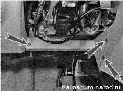
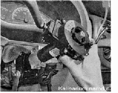
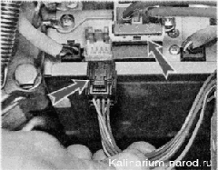
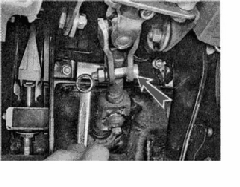
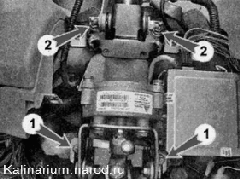
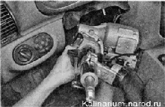
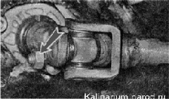
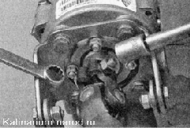
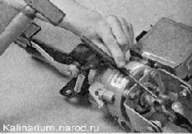
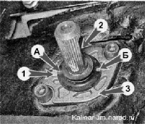

Рулевая колонка - снятие и установкаВ зависимости от цели работы рулевую колонку можно снять в сборе с рулевым колесом и подрулевыми переключателями. Операция показана с частичной разборкой рулевой колонки. Снятие 1. Подготавливаем автомобиль к выполнению работы и снимаем клемму с отрицательного вывода аккумуляторной батареи. 2. Поворачиваем рулевое колесо в положение, соответствующее движению по прямой. Снимаем рулевое колесо 3. Снимаем декоративные накладки рулевой колонки. 4. Крестовой отверткой отворачиваем три самореза и снимаем нижнюю накладку панели приборов. 
5. Отсоединяем колодки жгутов проводов от подрулевых переключателей и контактного кольца. 6. Накидным ключом на 8 мм ослабляем стяжной болт и снимаем соединитель в сборе с подрулевыми переключателями и с контактным кольцом»).  7. Разъединяем колодки жгута проводов замка зажигания. 8. Освобождая фиксаторы, отсоединяем две колодки жгутов проводов от электроусилителя рулевого управления.  Снять рулевую колонку можно в сборе с промежуточным валом. Однако снимать и устанавливать рулевую колонку удобнее, если разъединить промежуточный вал. Соединение фланцев карданных шарниров промежуточного вала возможно только в одном положении, поэтому можно не помечать их взаимное положение. 9. Накидным ключом на 13 мм отворачиваем гайку стяжного болта, соединяющего карданные шарниры промежуточного вала. Извлекаем болт. 
10. Торцовым ключом на 13 мм ослабляем затяжку двух гаек 1 нижнего крепления рулевой колонки. 
Тем же ключом отворачиваем две гайки 2 верхнего крепления рулевой колонки. 11. Снимаем рулевую колонку в сборе.  12. Накидным ключом па 13 мм отворачиваем гайку стяжного болта фланца нижнего карданного шарнира промежуточного вала. Извлекаем болт. 
13. Шлицевой отверткой разжимаем фланец и снимаем карданный шарнир со шлицев вала рулевого механизма. 14. Маркером или другим доступным способом помечаем взаимное положение фланца верхнего карданного шарнира и рулевого вала. Торцовым ключом на 13 мм отворачиваем гайку стяжного болта, удерживая головку болта накидным ключом того же размера. 
15. Через бородок сбиваем карданный шарнир со шлицев Установка Устанавливаем рулевую колонку в обратной последовательности. Перед установкой убеждаемся, что передние колеса находятся в положении движения но прямой, а паз на валу и метка на крышке картера рулевого механизма, а также метки на защитном чехле расположены должным образом (см. фото). Расположение меток для установки вала рулевого механизма в положениe прямолинейного движения автомобиля: 1 — угловое углубление в крышке картера рулевого механизма; 2 — паз на валу рулевого механизма; 3 — крышка картера рулевого механизма; А — угловой выступ на защитном чехле; Б — вырез в кромке защитного чехла Защитный чехол должен быть надет на вал рулевого механизма так, чтобы метка А располагалась напротив углубления угловой формы 1, расположенного в крышке картера, а вал при этом повернут так, чтобы его паз 2 располагался напротив метки Б защитного чехла. Гайки стяжных болтов на фланцах промежуточного вала затягиваем моментом 23 — 28 П-м (2,3—2,8 кгс-м). Гайки крепления рулевой колонки затягиваем моментом 15-18,6 Н-м (1,5-1,9 кгс-м). |